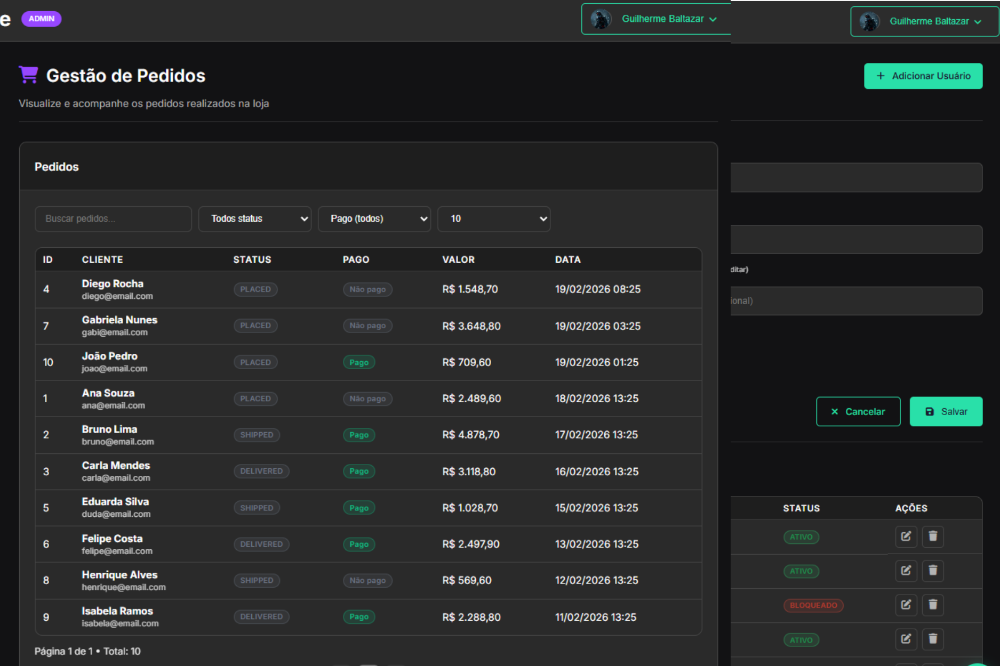
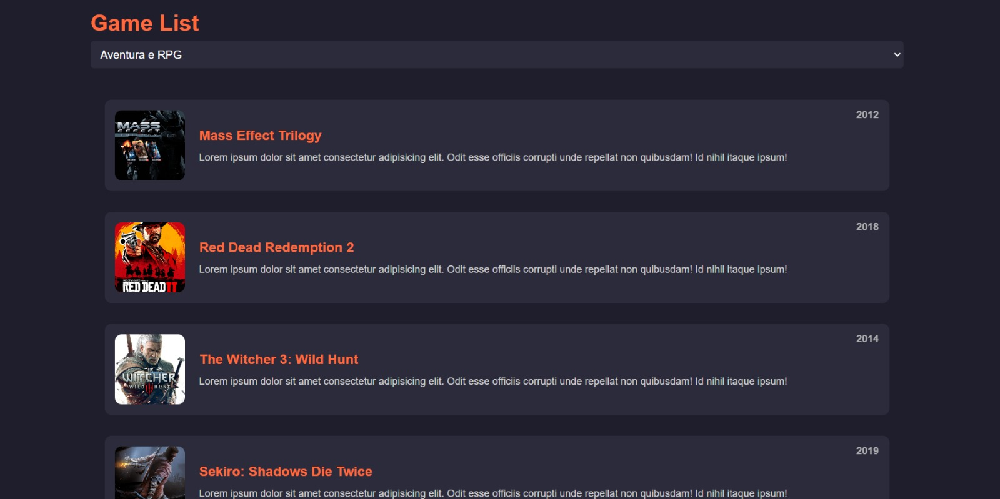
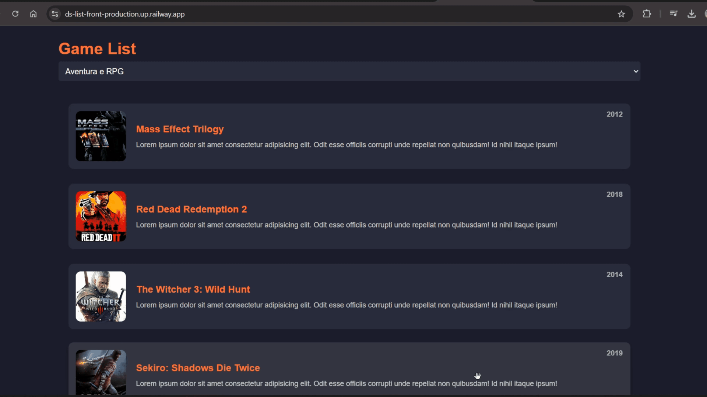
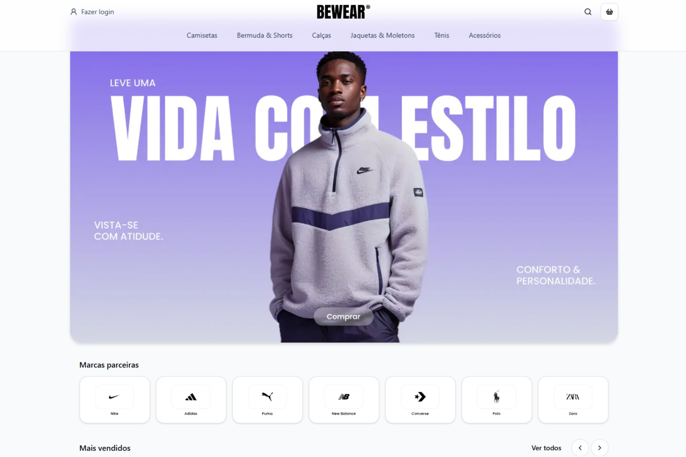
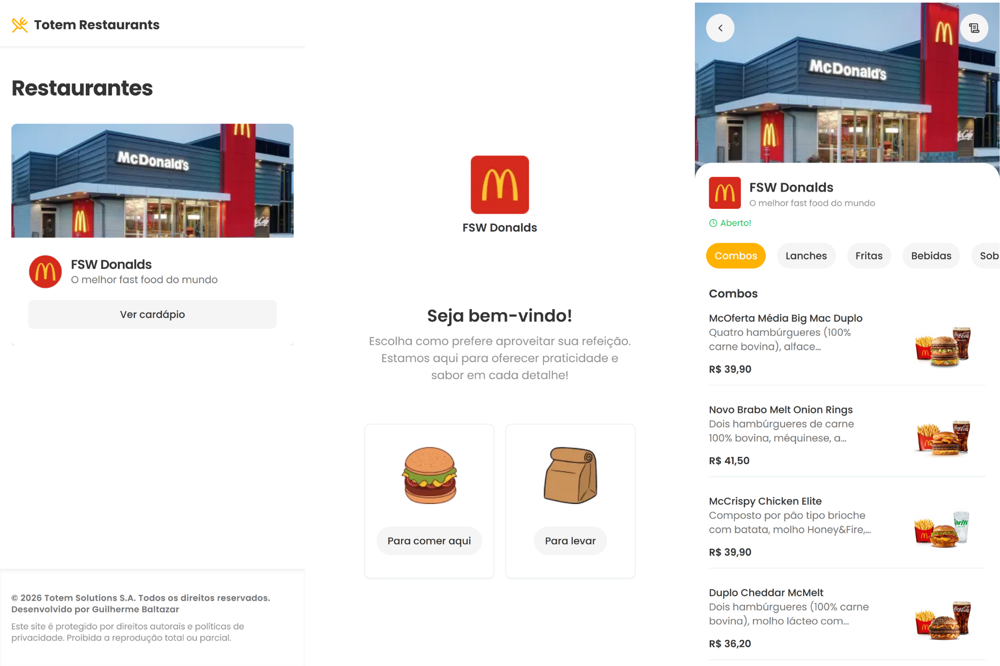
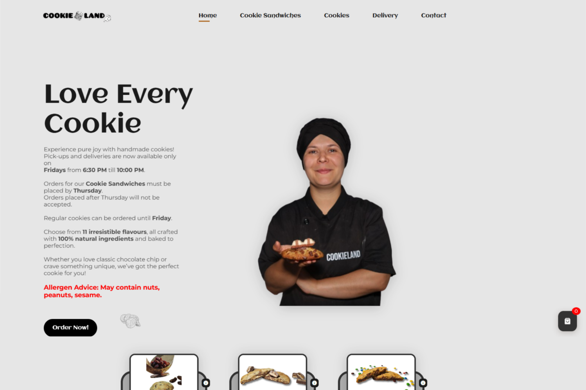
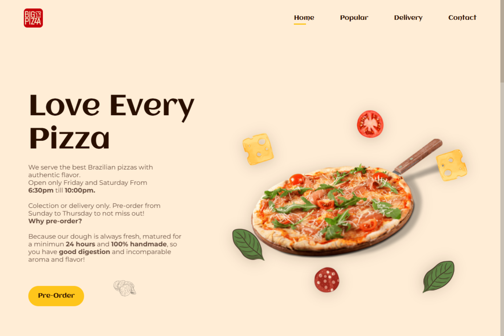
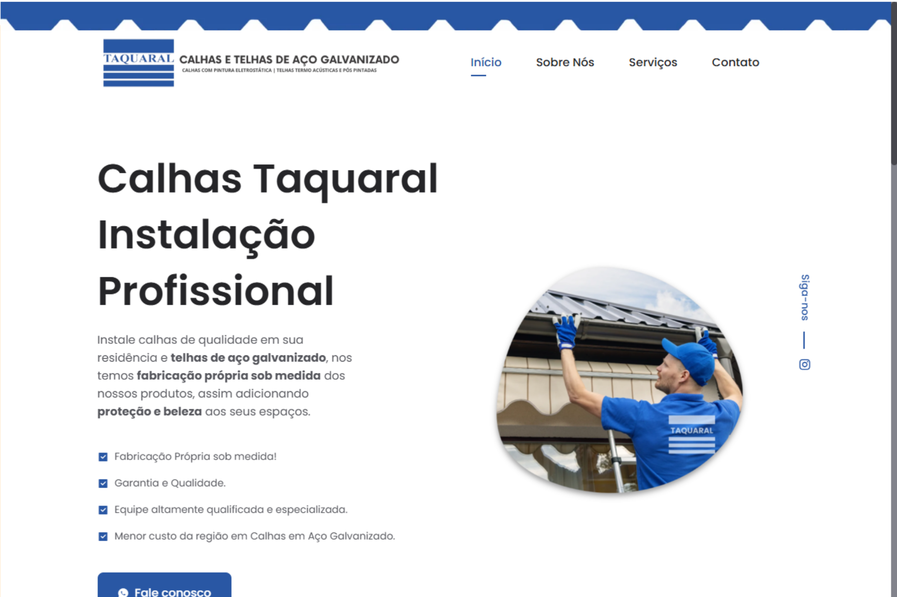

Java E-commerce
Arquitetura robusta de backend para vendas escaláveis com Spring.
Backend Software Engineer
Desenho e sustento o backend de sistemas críticos: arquitetura antes da primeira linha de código e IA generativa como acelerador, dentro dos padrões que eu defino.
Sou Guilherme Baltazar, bacharel em Ciência da Computação com mais de 7 anos construindo o backbone de sistemas críticos. Minha trajetória foi de evolução rápida: pulei o nível júnior por desempenho técnico e hoje atuo como Desenvolvedor Pleno em uma multinacional, como responsável técnico de um sistema governamental de alto volume.
Meu trabalho começa antes do código: desenho a arquitetura, mapeio riscos e pontos de performance a partir do requisito e só então implemento. Na prática, isso reduz retrabalho, encurta o ciclo de entrega e mantém o sistema estável em produção.
Uso IA generativa como acelerador, mas com governança: eu defino a arquitetura, os contratos e os padrões de qualidade, e a IA gera código dentro desse contrato — nunca o contrário. Tudo que sai daí passa por revisão, teste e leitura crítica antes de chegar em produção.
Java e Spring há mais de 7 anos. Hoje respondo tecnicamente por um sistema governamental de alto volume rodando em produção.
React, Next.js e TypeScript. Os produtos deste portfólio estão no ar com a interface feita por mim — consigo acompanhar um produto do banco de dados até a tela.
Docker, GitLab CI e observabilidade. Para mim a entrega não acaba no merge: acaba quando o sistema se sustenta sozinho em produção.
Backend é onde eu moro. Front-end é o que me deixa entregar o produto inteiro, sem depender de ninguém para fechar a ponta.
Se você é da área, talvez prefira ler assim.
Remoto · Multinacional
Responsável técnico pelo projeto CPP (Controle de Protesto por PAT) da Secretaria de Estado da Economia de Goiás — um sistema onde uma falha silenciosa vira prejuízo público. Respondo pelas decisões de arquitetura, pela estabilidade em produção e pela evolução do produto.
Campinas, SP
Promoção após destaque técnico. Foco na modernização da infraestrutura de TI e evolução de sistemas internos críticos.
Formação Superior Completa - UNIP
Base acadêmica sólida voltada para a resolução de problemas complexos e engenharia de alto nível. Durante o curso, já aplicava os conceitos teóricos em projetos reais de mercado.

Arquitetura robusta de backend para vendas escaláveis com Spring.
Ecossistema de microsserviços com Eureka, API Gateway (Zuul), Ribbon, OpenFeign e Hystrix para descoberta de serviços e tolerância a falhas.

Interface moderna e responsiva para listagem de games, integrada a uma API robusta.

API REST otimizada para ranking e categorização de games com persistência de dados.
Implementação de otimizações de alta performance para processamento batch em larga escala.
LinkedIn PostSistema de gerenciamento e agendamento de transmissões ao vivo.

Projeto de bootcamp focado em UI/UX moderno e componentes escaláveis.

Interface de autoatendimento inspirada no McDonald's desenvolvida durante bootcamp.


Site institucional e sistema de pedidos para a pizzaria do Tomas na Irlanda.

Site institucional otimizado para o setor de construção civil.
Aberto a conversar sobre backend Java, arquitetura e produto. Respondo rápido.